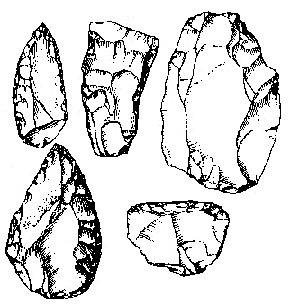

Pagliuso
I propose a simple activity for everyone: each one post (and send me: ana.pagliuso@gmail.com) one image of the “Gear of your Childhood” until Monday 10 AM Boston time! On Tuesday we’ll see the results.

I propose a simple activity for everyone: each one post (and send me: ana.pagliuso@gmail.com) one image of the “Gear of your Childhood” until Monday 10 AM Boston time! On Tuesday we’ll see the results.
Hi!
I grew up next to a dry stream which probably saw many years of prehistoric human activity. Along the stream you could find many flint stone tools like those. I collected them, tried to use them and make more (which is very hard). In "gears of my childhood" the author speaks about how his love for gears based a model in his mind that later helped him cope with math. I do not know if I can find such a straight relation about flint stone tools. I do know this: tools can be created wherever you are, whatever you have. 